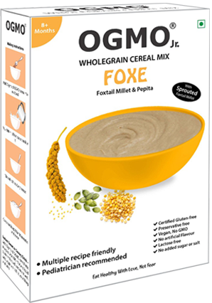
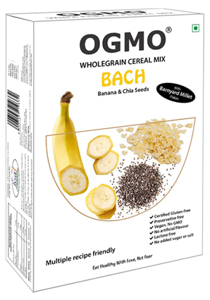
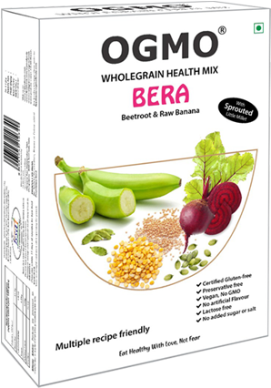

- 
- 
- 
Ingredients – Little millet, raw banana, chickpea (Bengal gram/chana dal)
Introducing your baby to solid foods is an exciting milestone.
What is cuter than a baby covered from head to toe in runny porridge?
It exposes them to new taste, flavours, smell and textures. It also provides necessary nutrients that might otherwise be difficult to fill.
As much as we love the idea of feeding home-cooked baby food to our little ones, for a busy parent, making baby food from scratch can be stressful and time consuming.
OGMO is expanding its portfolio to baby meals and introducing OGMO Jr. using some of our indigenous grains.
OGMO brings you OGMO Jr. a baby cereal prepared with simple plant-based whole food ingredients using some of our indigenous grains..
We use pre-soaked wholegrain to prepare these mixes. The process of soaking transforms the grains into more digestible and increase the minerals and nutrients to manifolds.
Why OGMO Jr.
Research shows that introducing healthy foods early helps develop positive relationship with food, create a willingness to try new things and cultivate good eating habits for life.
We are taking this as a wonderful opportunity to introducing an early love of healthy and whole foods to children.
OGMO Jr. is plant-based food product range which is rich in minerals, vitamins and many other micro nutrients. These act as a good prebiotic food and are high in dietary fiber.
Better glycemic index of these products help control diabetics and weight management in children.
OGMO Jr. assist you in maximising your baby’s health and develop their taste buds while making weaning an easy experience for you.
Little Millets are ancient grains that belong to a grass family. Little millet are the smallest minor millets and is known as Kutki in Hindi and Samai in Tamil.
Unpolished Little millets are rich in protein, fats, antioxidants, complex carbs, vitamins and minerals. This makes them complete food.
These humble grains are non-acidic, non-allergic, and gluten free, which makes them soothing, easy to digest and a healthy food for growing children.
Green/raw banana powder is power-packed with vital nutrients and helps build immunity and in development of healthy brain in babies.
Green banana (raw banana) are loaded with fibre and is a good source of resistant starch.
It is high in potassium and is easy to digest and may not cause a cough and cold like normal bananas.
Bengal Gram – Chana dal is a legume and a perfect desi superfood loaded with nutrients such as proteins, fibre and vitamins & minerals like B6, folate, niacin, iron, copper, manganese etc.
Additional information
Ways to use:
- Porridge 1 for babies– Add 2 tbsp. of OGMO Jr. mix to 1 cup water. Combine well to remove lumps and cook for 3-4 minutes on medium flame and feed.
- Porridge 2 – Add 2 tbsp. of OGMO Jr. mix in a bowl. Pour 100 ml, hot water or milk. Combine to remove lumps, rest it for 5 minutes and feed.
- Sweet Health drink – Add 3 tsp. of OGMO Jr. in a bowl, pour 2 tbsp. of water in it and combine well. Add 1 cup hot milk and sweeten it to your liking and serve.
- Savory health drink – Add 3 tsp. OGMO Jr. in a bowl, pour 2 tbsp. of water in it and combine well. Add 1 cup hot water, a pinch of salt & asafoetida powder, 1/4th cumin powder and serve.
Note
- Avoid adding sweetener or salt to babies under 1 year.
- For children above 1 year customize the sweetness of porridge with jaggery/date syrup/palm sugar/mashed fruits.
- Add more liquid/milk to thin out the porridge.
- Add a teaspoon of ghee and serve for more sensory pleasures.
Consult your paediatrician before starting any new food for your babies. Go slow and do it in moderation.
If at first, they don’t like it, try again! It can take a few exposures for babies to enjoy new flavors.
Uses of LIRA; You can make Pancakes, Laddus, dosas, rotis, cakes, cookies and many other recipes with the mixes.
Our Team:
We are a small team of passionate people who know how important nutrition and good health is to your family. We are committed to creating honest and wholesome foods for babies.
OGMO Jr. has curated products that are nutritious, easy to make and create enjoyable mealtimes with your babies with the help of paediatric expert doctor Dhanasekhar Kesavelu and nutritionist Payal Talesra.
Yes, we are bringing convenience to you without compromising on your baby’s health.
Say NO to spending more hours making food for your baby and say YES to spending hours playing with them.
LIRA (Little millets & Green/Raw Banana) Indian super food you don’t want to skip from your children’s diet!
Dr. Dhanasekhar Kesavelu is a Paediatric Gastroenterologist with over 21 years of experince and several publicauions and research papers in his name at various national and international journals.
His constant endeavour of research on various subjects of pediatric gut health is amied at making the lives of children better.